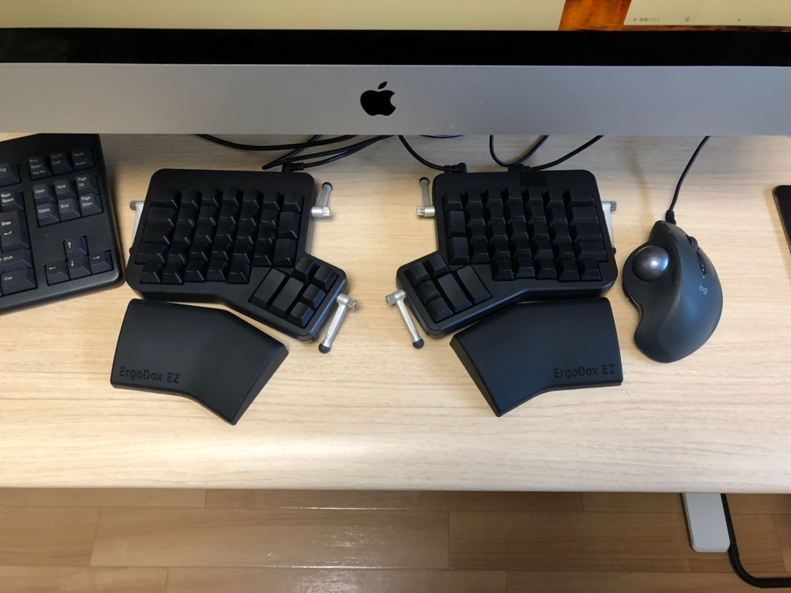
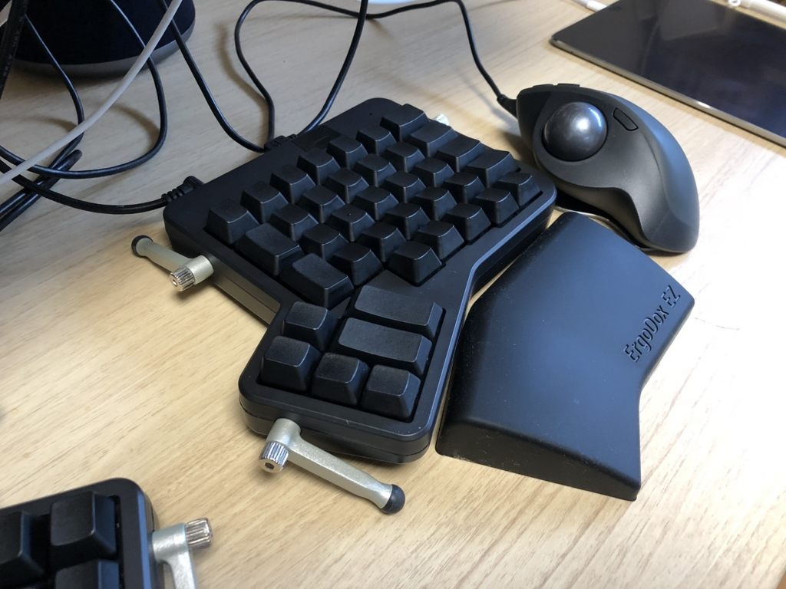

ErgoDox EZ 1週目 最初の壁を乗り越える
rebuild.fmの#206,207でErgoDox EZが紹介され、同時期にTwitterで自作キーボード勢の写真を見ていたらどうにも気になってしまい、気軽な気持ちでポチってしまった。
健康に良いことは何でも試したい年齢になってきたのでついつい^^;
10日くらい使ってきて、だいぶ慣れてきたので最初の頃感じたことを残しておこうと思います。
購入
- 参考サイトをみて、公式サイトで購入。
- キーはRealForceに近いレッドにしました。
- 注文 計$325.00 今は送料無料みたいです
- ErgoDox EZ Original Standalone Blank / Black / Cherry MX Silent Red $270.00
- The Wing: Custom ErgoDox EZ Wrist Rest Black $30.00
- Tilt/Tent Kit Black $25.00
- 自分は他で見るよりちょっと時間かかって、3週間ジャストで到着しました。
ファーストインプレッション
- 本体とレストアームを配置、左右をイヤホンとかで使いそうなケーブルで繋ぎ、MacにUSBを接続
- キーボード周りの知識はあまりなくJIS配列しか使ってこなかったので、キーボードの種類を選ぶところで若干不安になりながらJISを選択する
- とりあえずデフォルトのキー配置のまま使って見る
- や、やべえ全然打てない・・・つらい・・・
- WEBのキー配置変更ツールで何となくそれっぽく配置して実践してみる
- うーむ、これは結構マインドを変えて、がっつり取り組まないとダメなやつかなと気づき始める
- 正直軽く絶望。。そこそこ高いのに・・・使いこなせるだろうか。
- 今となってはだいぶ快適に使えていますが、最初によくわからなかったのが
- 左右のキーボードの配置と角度がわからない
- キーボードの傾きがどれくらいがいいのかわからない
- キー配置をどうすればいいかわからない
- それぞれ試行錯誤するのですが、初心者用のおすすめみたいなものにめぐり合えず苦戦していました
- 思えば、いきなり熟練者のように使おうという意識が強すぎて、カスタマイズしすぎていた気がします
- 今は極力既存の環境のままにして、少しずつ体に覚えさせていく方針にしています
初期の対応
- まずは既存の環境に合わせる形でセットアップしてみる
- 左右の配置は間11cmくらい。極端に広げすぎない。
- キーに対して平行に配置する。
- チルトの角度はあまりつけず、奥がちょっと低くなるくらいにしています。
- キー配置は、基本的にはJISに合わせる（この辺は別に記事を書こうと思っています）
- こんな感じです 

最初に乗り越える壁
- 直列配置
- 普通のキーボードは段ごとに、左右にずれてキーが配置されていますが、ズレがなく直列に配置されています
- 今までの感覚と違うので、結構つらいと思います
- 特にちょっと遠い1段目と4段目。数字やc,bあたりがいまだに誤タッチする
- これはもう慣れの問題なので、ひたすら練習して体にわからせるしかないと思います
- キー配置
- JISにするなら、コンパイル環境を整えるのが必須（WEB上では設定できない）
- 最初はWEBのでもいいと思うけど、早いうちに移っておいたほうが楽だと思う
- いろんな人が勧めているが、どこかにリセットキーはあったほうが良い
- 開発が盛んで、やり方が変わってたり、githubへのリンクが切れたりするので、公式のドキュメントをちゃんと読んだ方が近道だと思う
- 親指周りの配置
- JISな配置にすると、改行やバックスペースなどをこの辺に配置する必要があるので、ここも慣れが必要
- また、この辺をどう使うかによって自分なりの使い方が形成されていくと思うので、この辺を試行錯誤してるのはとても楽しい
良かったこと、感じたこと
- 肩がちゃんと開くようになったのは実感できる
- 文章書くより、プログラミングの方が比較的書きやすかった
- レイヤーとかの機能がわかってくると、ぐっと楽しくなる
- ある程度方針が決まったら、タイピングソフトとかで鍛えた方が良さそう
気になること
- まだ慣れてないので、腕が疲れる。逆に疲れてる感じはまだするw
- ある程度配置パターンがありそうなので、パターン集みたいのがあればあるといいなあ。あるのかな？
- この形状だと指動かすのがしんどいので、もっとコンパクトなIrisとかも気になる。